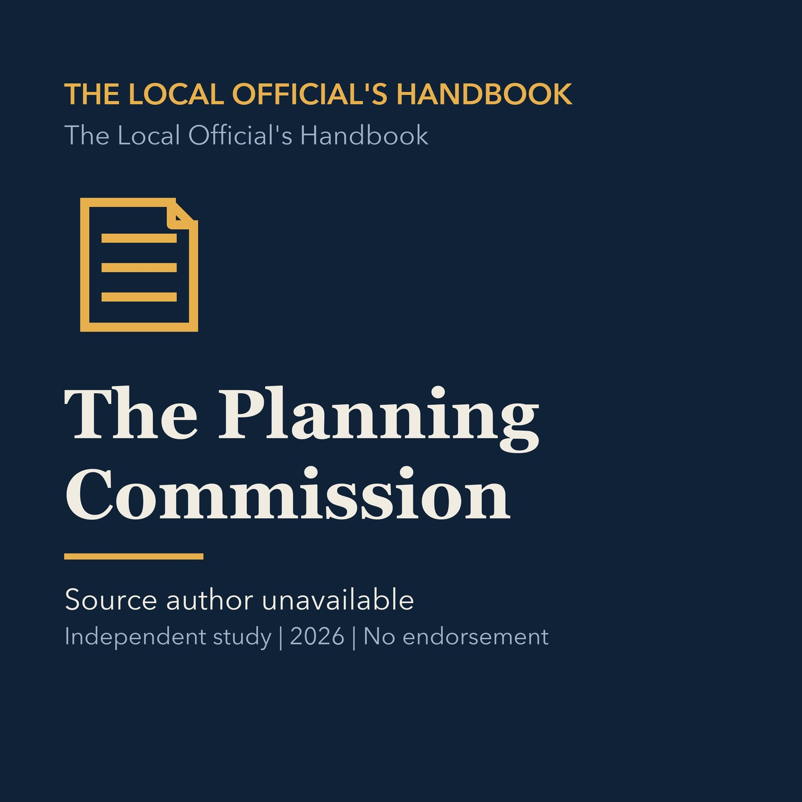

EPISODE 04
The Planning Commission
Examines the planning commission's changing role, authority, record, and relationship to adopted policy.

- Stable GUID
13b5e61b-01eb-5c2f-ac80-7f81b4c7bb78- Release
- local-officials-handbook-v2026.2
- SHA-256
d20fc71a38253b2ac67cc08943f33d905205f8734fcf8731098cc42abeeecfce